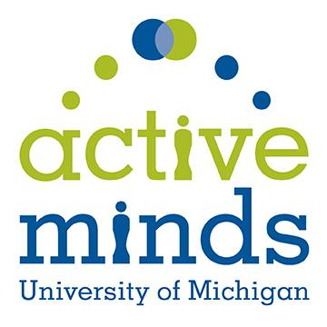
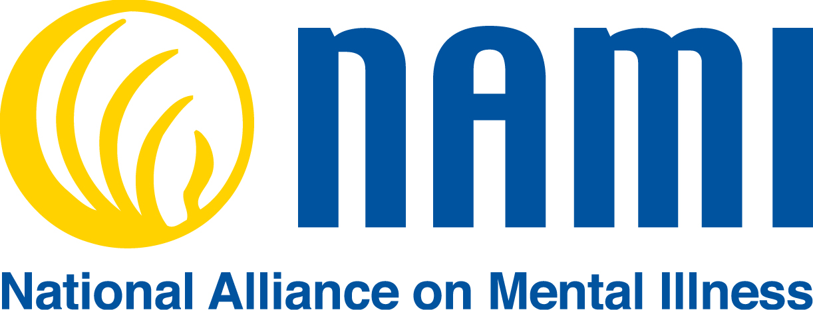
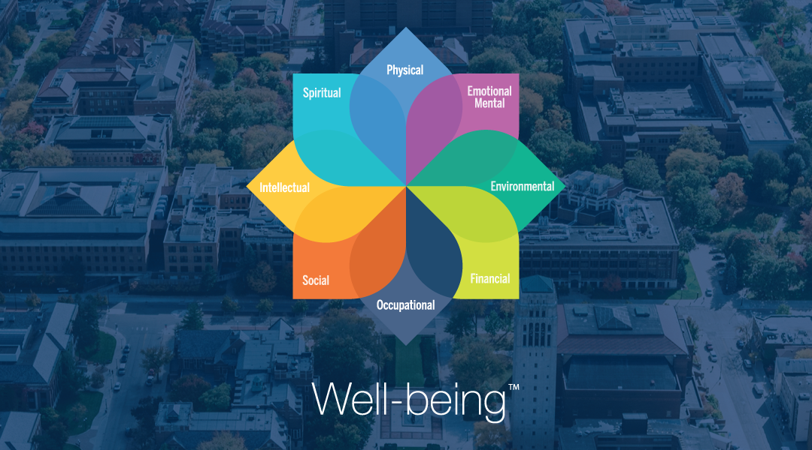
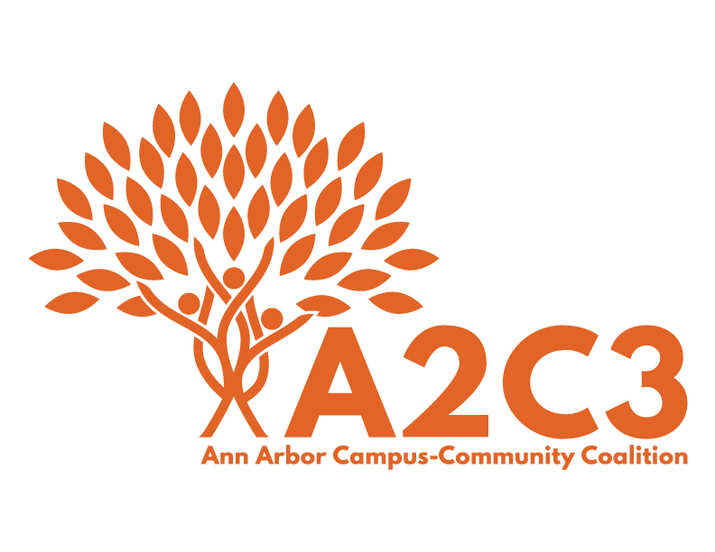

PULSE is a student organization at the University of Michigan that is focused on the intersection of well-being and identity.

Wolverine Support Network (WSN) empowers University of Michigan students to create an inclusive community and support each other’s identity, mental well-being, and day-to-day lives.
Active Minds at the University of Michigan (Active Minds - UM) is a chapter of a national nonprofit organization that focuses on fostering student mental wellness. Active Minds - UM is dedicated to encouraging students to reprioritize mental health, connecting students to on-campus mental health resources, reducing the stigma surrounding mental health through education, and creating an inclusive and compassionate community.
An inclusive community started in Fall 2014, dedicated to non-dogmatic spiritual growth through a unique approach of practicing meditation, discovering one’s purpose and engaging in meaningful action. Our weekly meetings consists of guided meditation sessions led by certified teachers who are also university students, discussions on topics related to spiritual growth or finding purpose, and activities and talks from people who come from various spiritual backgrounds. We meet Sundays at 2:00 pm.
NAMI on Campus acts as an extension of the largest grass-roots mental health organization in America, the National Alliance of Mental Illness. NAMI on Campus is a student-run mental health policy organization that aims to tackle mental health issues on campus by raising awareness and educating the community with a special focus on advocating for progressive mental health law and policy change.
MHealthy Champions are staff and faculty volunteers who help to create a culture of health among their coworkers and in their work areas. Champions promote MHealthy programs and act as a liaison between their department and MHealthy. They provide us with feedback, thoughts or ideas to make our programs even better and useful for their area. Our goal is to have a representative group of our entire university community that includes diversity in job roles and levels, age, race, ability, and gender.
A core component to the Well-being Collective that focuses on well-being policies and systems-level change at the University of Michigan. Additionally, the SWBN will share creative ideas, pilot well-being technology and contribute to student-focused well-being campaigns.
Through the involvement of a broad-based coalition of community members, we want to promote a lifestyle free from alcohol and other drug harm, consequently improving the quality of life on our campus and within the community.
We are a community and civic engagement center with a mission to cultivate and steward equitable partnerships between communities and the University of Michigan in order to advance social change for the public good. Based upon this mission, our vision is for inclusive democracy; thriving, diverse communities; and equity and social justice.